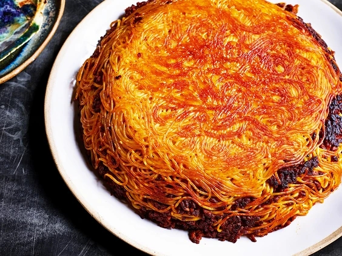

If you ask Persian children and teenagers about their favorite food, you will probably hear makaroni several times! Makaroni is a special type of spaghetti but does not follow Italian rules.
Yet, even many Italians enjoy eating it. To cook Persian spaghetti, we drain the spaghetti and then let it cook with meat and tomato paste sauce. This food is an inseparable item in Persian households’ routine meals.
So without further ado, let’s dive into makaroni recipe, this popular Persian food.
1.First of all, chop the onion and garlic and sauté them in a pan with 2 tbsp. of vegetable oil.
2.When the onions turn golden brown, add the meat and mushrooms to the pan and stir frequently.
3.Continue stirring until the meat is not raw anymore. At this stage, add turmeric, Salt, pepper, and tomato paste.
4.Sauté the mixture with tomato paste for some minutes to remove any raw tomato taste. Now your makaroni sauce is ready.
1.In the last step, you should add spaghetti and the sauce to a pot layer by layer.
2.Choose a nonstick pot, and add 2 tbsp. of vegetable oil to it.
3.Cut the potatoes into round shapes, and place them in the pot.
4.hen add a layer of spaghetti, and pour a layer of sauce on it. Continue adding the spaghetti and the sauce layer by layer until all the ingredients are used. Do not forget to finish the process with a sauce layer. That’s it.
5.Wrap the pot lid with a clean kitchen towel, and let your makaroni stay on medium heat for about one hour.
6.At the end of this period, increase the heat to high for an extra 5 minutes in order to get a crispy Tahdig.
To serve the delicious makaroni, flip the pot upside down on a serving platter so that you can get a makaroni cake!
